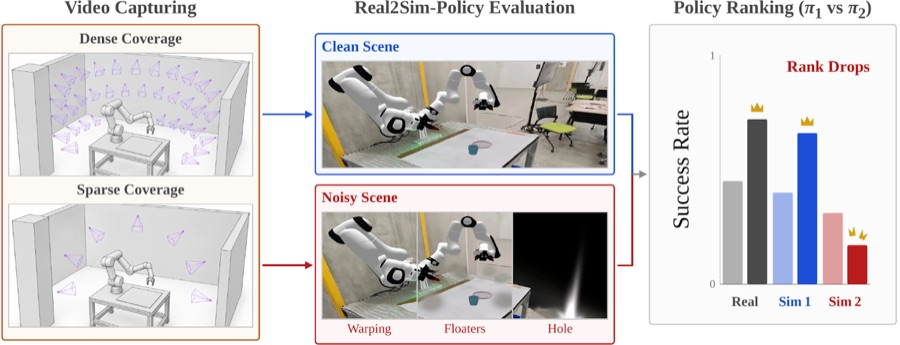
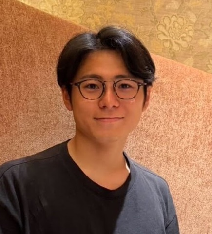
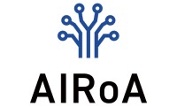
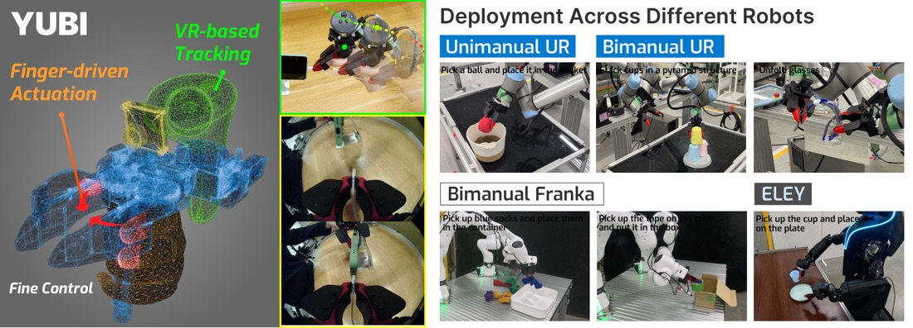
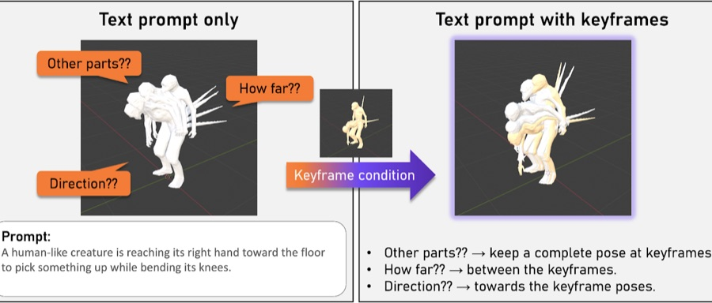
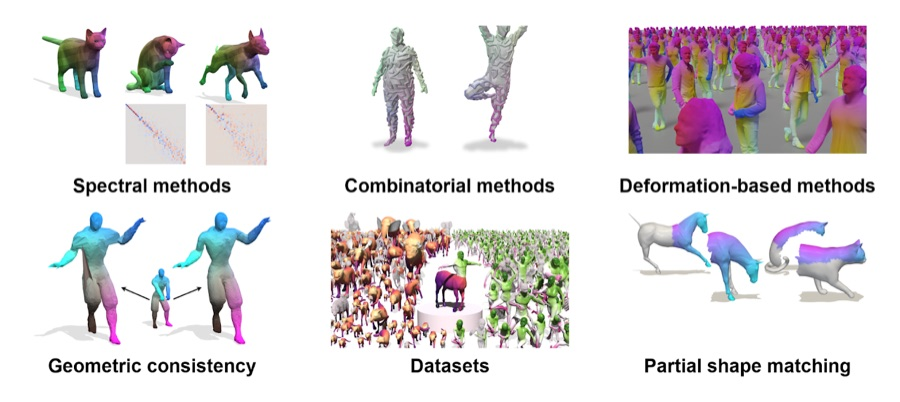
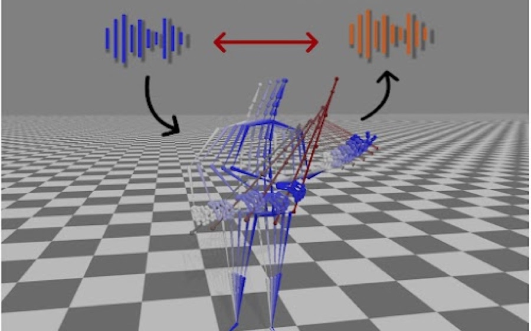
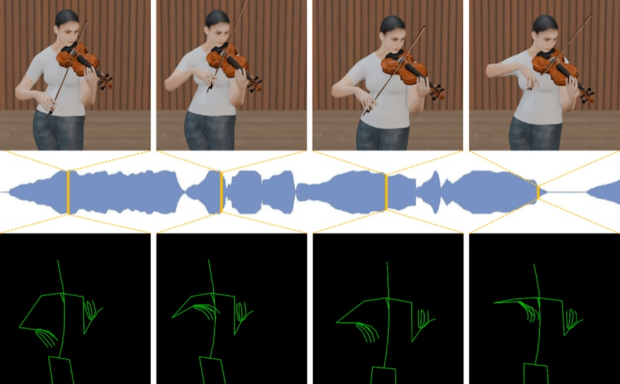

Hiroki Nishizawa 西澤 大樹
M.S. student · Morishima Lab, Waseda University
I am a master's thesis student at Morishima Lab, Waseda University, collaborating with the Visual Computing and Artificial Intelligence Department at the Max Planck Institute for Informatics under Dr. Vladislav Golyanik. I am also a research intern at AIRoA.
I work closely with Hirokatsu Kataoka's group at AIST and Prof. Hubert P. H. Shum at Durham University.
Research interests: Modeling and understanding the physical world. Real2Sim, physical simulation and rendering, 4D vision, shape correspondence.

AIRoAMay 2026 – MPI-INF (remote)Apr 2026 – Sep 2026 AISTNov 2025 – Waseda UniversityApr 2021 –News
- Started a research internship at AIRoA, working on Real2Sim for Physical AI.
- Joined MPI-INF as a remote affiliate with Dr. Vladislav Golyanik.
- Started a research collaboration with Hirokatsu Kataoka at AIST.
Publications

YUBI: Yielding Universal Bidigital Interface for Bimanual Dexterous Manipulation at Scale
Conference on Robot Learning (CoRL) 2026


Non-Rigid 3D Shape Correspondences: From Foundations to Open Challenges and Opportunities
Eurographics 2026 (STAR)

Music Performance Hands-included-Motion Generation via Dual Domain Loss with Audio Reconstruction
ICCV 2025 Workshop — Observing and Understanding Hands in Action (HANDS)

SyncViolinist: Music-Oriented Violin Motion Generation Based on Bowing and Fingering
WACV 2025, pp. 5419–5428
Education
- M.S. research collaboration, Max Planck Institute for Informatics
Remote / Saarbrücken, Germany · Supervisor: Dr. Vladislav Golyanik - M.S. in Physics, Waseda University
Tokyo, Japan · Supervisor: Prof. Shigeo Morishima - B.S. in Physics, Waseda University
Tokyo, Japan · Supervisor: Prof. Shigeo Morishima
Experience
Contact
- pipidesu2430 [at] akane.waseda.jp
- Address
- 55N406, 3-4-1 Okubo, Shinjuku, Tokyo 169-0072, Japan (Morishima Lab)
- Phone
- +81-3-5286-3510 (Morishima Lab)